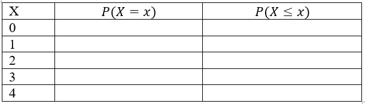

Chapter 8 MATH 224: Binomial Distribution Worksheet
\(\underline{\textbf{Review on Binomial Distribution}}\)
Conditionsto be satisfied for a Binomial Variable Distribution:
\(\bullet \ \ \text{The number of trials,is a fixed positive integer}\)
\(\bullet \ \ \text{The trials are independent}\)
\(\bullet \ \ \text{Each trail has two possible outcomes, classified as success or failure}\)
\(\bullet \ \ \text{The probability of a success, p, is the same for each trial}\)
Binomial Distribution
For a binomial random variable with trials and the probability of a single trial being a success the probability of observing exactly successes is
\(P(X =k) = \binom nkp^k(1-p)^{n-k}=\frac{n!}{k! (n-k)!}p^k(1-p)^{n-k} \text{ k= 0,1, ..., n}\)
Accumulative Probability
(at most k success) \(P(X\le k)=P(X <k+1)=\sum_{i=0}^{k}P(X=i)\)
(at least k success) \(P(X\ge k)=P(X>k-1)=1-P(X\le k-1)=\sum_{i=k}^n P(X=i)\)
\(\underline{\textbf{Using R :}}\)
- For \(P(X\le k):\)
dbinom(k, n, p)
- For \(P(X\le k)=P(X < k+1):\)
pbinom(k, n, p, lower.tail = TRUE) (the “lower.tail = TRUE” can be omitted)
- For \(P(X> k)=P(X \ge k+1):\)
pbinom(k, n, p, lower.tail = FALSE)
- For n! :
factorial(n)
- For \(\binom nk:\)
choose(n,k)
\(\underline{\textbf{Factorial and Combination Coefficient}}\)
n! = \(1 \times 2 \times ... \times n\) 0! = 1
\(\binom nk = \frac{n!}{k!(n-k)!}\) (\(\binom nk\) is read as “n choose k”)
8.1 Exercises
Exercise 1. How many ways can we choose 2 students from a group of 6?
Example 2. For a binomial distribution with n = 4, p = 0.2.
Write the formula for computing the probability of getting exactly k successes.
Fill the following distribution table. (Round to 4 decimals) (you may use R calculator)

What is the expected value?
What is the standard deviation?
Exercise 3. About 75% of dog owners buy holiday presents for their dogs. Suppose twenty dog owners are randomly selected, find the probability of
Exactly three buy their dog holiday presents
Exactly seventeen do not buy their dog holiday presents
Three or more buy their dog holiday presents
At most four buy their dog holiday presents
Minimum of 11 and maximum of 17 dog owners buy their dog holiday presents
Find the expected number of dog owners in this sample, who buy their dog holiday presents
Is it unusual if 16 out of 20 randomly selected dog owners buy their dog holiday presents? Why?
Is it unusual if 10 out of 20 randomly selected dog owners buy their dog holiday presents? Why?
8.2 Solution
Exercise 1. How many ways can we choose 2 students from a group of 6?
## [1] 15Example 2. For a binomial distribution with n=4,p=0.2.
a) Write the formula for computing the probability of getting exactly k successes.
\(P(X =k) = \binom nkp^k(1-p)^{n-k}=\frac{n!}{k! (n-k)!}p^k(1-p)^{n-k} \text{ k= 0,1, ..., n}\)
In R you use dbinom(k,n,p)
b) Fill the following distribution table. (Round to 4 decimals) (you may use R calculator)
## [1] 0.4096 0.4096 0.1536 0.0256 0.0016## [1] 0.4096 0.8192 0.9728 0.9984 1.0000c) What is the expected value?
## [1] 0.8d) What is the standard deviation?
## [1] 0.8Exercise 3. About 75% of dog owners buy holiday presents for their dogs. Suppose twenty dog owners are randomly selected, find the probability of a) Exactly three buy their dog holiday presents
\[P(X=3)\]
## [1] 2.799425e-08b) Exactly seventeen do not buy their dog holiday presents
\[P(X=17)\]
## [1] 2.799425e-08c) Three or more buy their dog holiday presents
\[P(X\ge 3)=1-P(X \le 3)\]
## [1] 1## [1] 1d) At most four buy their dog holiday presents
\[P(X\ge 4)=P(X = 0)+...+P(X=4)\]
## [1] 3.865316e-07## [1] 3.865316e-07e) Minimum of 11 and maximum of 17 dog owners buy their dog holiday presents
\[P(11 \le X \le 17)\]
## [1] 0.8948752f) Find the expected number of dog owners in this sample, who buy their dog holiday presents
## [1] 15g) Is it unusual if 16 out of 20 randomly selected dog owners buy their dog holiday presents? Why?
## [1] 0.1896855Comment
Whether it’s unusual depends on your chosen significance level. If you consider a low probability (e.g., p<0.05) as unusual, then it might be considered unusual.
Is it unusual if 10 out of 20 randomly selected dog owners buy their dog holiday presents? Why?
## [1] 0.009922275Comment
Whether it’s unusual depends on your chosen significance level. If you consider a low probability as unusual, then it might be considered unusual.